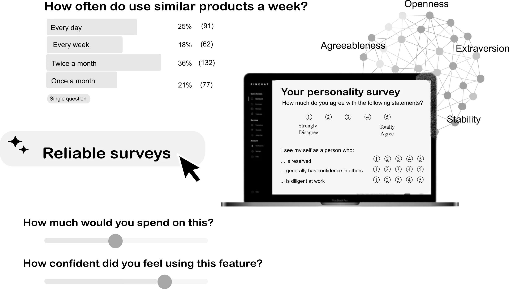
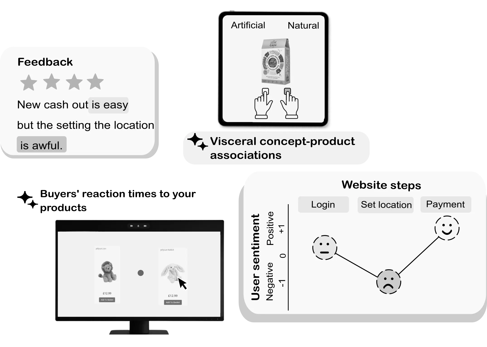
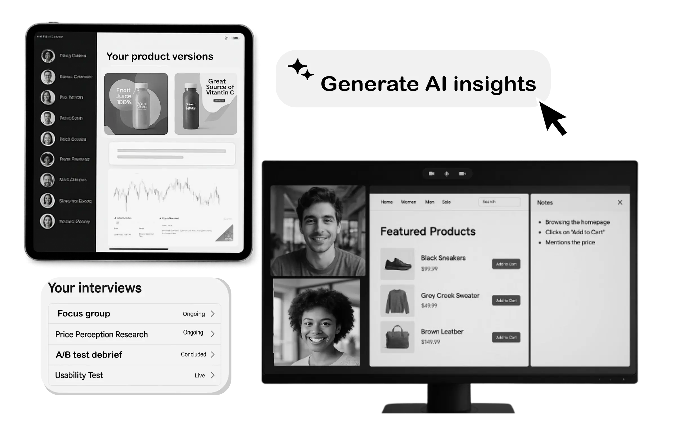
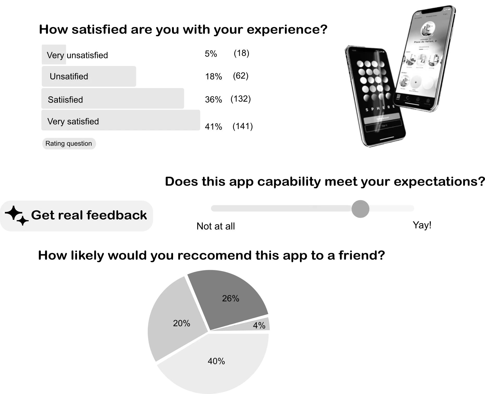
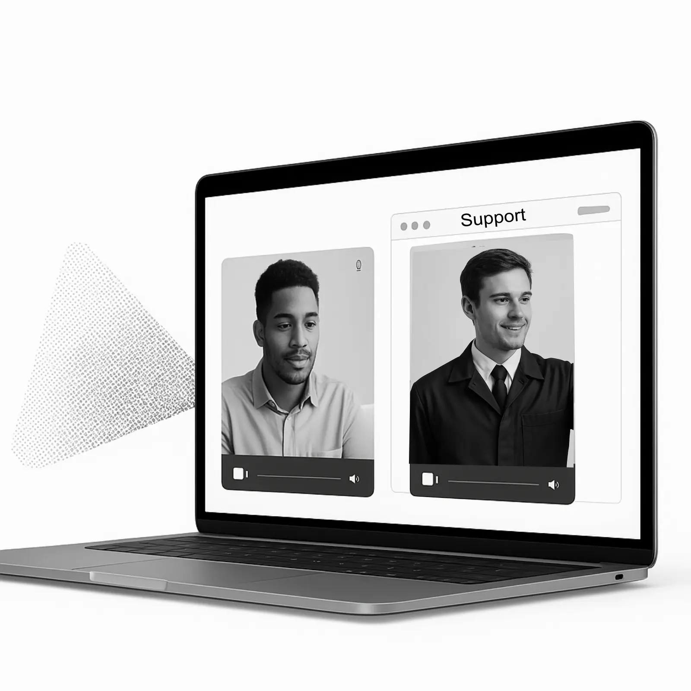

Cosa facciamo
Supportiamo enti del terzo settore con questionari e sondaggi, pianificazione di progetti e analisi dei dati, trasformando le informazioni raccolte in risposte chiare da usare per coinvolgere donatori e volontari, creare contenuti per le campagne di fundraising, prevedere il successo di nuove campagne, dimostrare l’efficacia dei tuoi interventi e ottenere più fondi. Offriamo soluzioni evidence-based per il terzo settore.
CLARITY LAB SERVICES
Stakeholders research
Conosci più a fondo chi sostiene le tue cause
Progettiamo questionari e surveys per raccogliere informazioni utili da volontari, donatori e altri stakeholders. Forniamo supporto alla raccolta, analisi e interpretazione di dati raccolti, fornendoti report semplici, infografiche e statistiche.

Project Validation
Dimostra il cambiamento che generi
Ti aiutiamo a pianificare e misurare i risultati ottenuti dal tuo progetto per ottenere prove concrete del tuo impatto. Otterrai statistiche, grafici e report che potrai usare per ottenere più fondi, convincere partner e migliorare i tuoi interventi.

Donor-UX starter
Migliorare l'esperienza delle persone che vogliono donare online
Testiamo il tuo sito con utenti reali per capire cosa funziona e cosa no. Ti forniamo un report concreto e veloce per ottimizzare la raccolta fondi digitale. Aumentando donazioni, riducendo gli abbandoni e creando un percezione più professionale della tua organizzazione.

Engagement Booster
Fidelizza volontari e sostenitori nel tempo
Monitoriamo partecipazione e soddisfazione, identifichiamo i motivi di drop‑out e forniamo azioni pratiche per mantenere alto l’entusiasmo e far crescere la community intorno al tuo progetto.

Data Guidance & Workshops
Metodologie e analisi sempre al tuo fianco
Ti supportiamo nell'analisi di dati e formazione del team, per trasformare i dati in decisioni chiare e finanziamenti vinti.

Ricerca affidabile
Applichiamo metodologie scientifiche consolidate per offrirti risultati precisi e ripetibili, su cui puoi davvero contare. Il nostro team comprende ricercatori provenienti dalle migliori università e R&D.
Approcci innovativi
La ricerca che coinvolge comportamenti e atteggimenti delle persone richiede una profonda competenza in modelli teorici, soft skills e tecnologie all’avanguardia. Utilizziamo strumenti come task comportamentali, analisi predittive e misure implicite per rivelare ciò che davvero guida le persone.
Soluzioni personalizzate
Ogni progetto è disegnato su misura per i tuoi obiettivi: ascoltiamo il tuo contesto, analizziamo la tua audience, ti guidiamo con dati chiari. Non offriamo soluzioni preconfezionate; collaboriamo con te per definire domande chiave, scegliere gli strumenti più adatti e interpretare i risultati in modo pratico.
Risultati comprensibili
I dati non devono spaventarti. Ti consegniamo risultati semplici da capire e facili da condividere nel tuo team o con la tua comunità. Traduciamo numeri complessi in insight chiari e actionable, con report visivi e narrazioni che rendono i dati accessibili a tutti, anche senza competenze tecniche